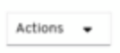

Web Console¶
Note
By deploying KubeVirt on top of OpenShift the user can benefit from the OpenShift web console functionality.
Managing Virtual Machines¶
Creating a Virtual Machine with the Interactive Wizard¶
The web console features an interactive wizard that guides you through
Basic Settings,
Networking, and
Storage screens to simplify the
process of creating virtual machines. All required fields are marked
with a *. The wizard prevents you from moving to the next screen until
the required fields have been completed.
NICs and storage disks can be created and attached to virtual machines after they have been created.
*Bootable Disk*.
If either URL or Container are selected as the Provision Source
in the Basic Settings screen, a rootdisk
disk is created and attached to the virtual machine as the Bootable
Disk. You can modify the rootdisk but you cannot remove it.
A Bootable Disk is not required for virtual machines provisioned from a PXE source if there are no disks attached to the virtual machine. If one or more disks are attached to the virtual machine, you must select one as the Bootable Disk.
-
Click Workloads > Virtual Machines from the side menu.
-
Click Create Virtual Machine and select Create with Wizard.
-
Fill in all required Basic Settings. Selecting a Template automatically fills in these fields.
-
Click Next to progress to the Networking screen. A
nic0NIC is attached by default.-
(Optional) Click Create NIC to create additional NICs.
-
(Optional) You can remove any or all NICs by clicking the
 button and selecting Remove NIC. A virtual machine does not
need a NIC attached to be created. NICs can be
created after the virtual machine has been
created.
button and selecting Remove NIC. A virtual machine does not
need a NIC attached to be created. NICs can be
created after the virtual machine has been
created.
-
-
Click Next to progress to the Storage screen.
-
(Optional) Click Create Disk to create additional disks. These disks can be removed by clicking the
button and
selecting Remove Disk. -
(Optional) Click on a disk to modify available fields. Click the button to save the update.
-
(Optional) Click Attach Disk to choose an available disk from the Select Storage drop-down list.
-
-
Click Create Virtual Machine >. The Results screen displays the JSON configuration file for the virtual machine.
The virtual machine should now be listed in Workloads > Virtual Machines.
Creating a Virtual Machine Using a YAML Configuration File¶
A virtual machine can also be created by writing or pasting a YAML
configuration file in the web console in the Workloads > Virtual
Machines screen. A valid example virtual machine configuration is
provided by default whenever you open the YAML edit screen.
If your YAML configuration is invalid when you click Create, an error message indicates the parameter in which the error occurs. Only one error is shown at a time.
Note: Navigating away from the YAML screen while editing cancels any changes to the configuration you have made.
-
Click Workloads > Virtual Machines from the side menu.
-
Click Create Virtual Machine and select Create from YAML.
-
Write or paste your virtual machine configuration in the editable window.
- Alternatively, use the
examplevirtual machine provided by default in the YAML screen.
- Alternatively, use the
-
(Optional) Click Download to download the YAML configuration file to your local machine in its present state.
-
Click Create to create the virtual machine.
The virtual machine should now be listed in Workloads > Virtual Machines.
Editing a Virtual Machine¶
You can edit some values of a virtual machine in the web console, either by editing the YAML directly, or from the Virtual Machine Overview screen.
When editing from the Virtual Machine Overview screen, the virtual machine must be Off.
-
Click Workloads > Virtual Machines from the side menu.
-
Select a Virtual Machine.
-
Click Edit to make editable fields available.
-
You can change the Flavor, but only to Custom, which provides additional fields for CPU and Memory.
-
Click Save.
The updated values are shown after the operation is processed.
Editing the YAML of a Virtual Machine¶
You can edit the YAML configuration of a virtual machine directly within the web console.
Not all parameters can be updated. If you edit values that cannot be changed and click Save, an error message indicates the parameter that was not able to be updated.
The YAML configuration can be edited while the virtual machine is Running, however the changes will only take effect after the virtual machine has been restarted.
Note: Navigating away from the YAML screen while editing cancels any changes to the configuration you have made.
-
Click Workloads > Virtual Machine from the side menu.
-
Select a virtual machine.
-
Click the YAML tab to display the editable configuration.
- (Optional) You can click Download to download the YAML file to your local machine in its current state.
-
Edit the file and click Save.
A confirmation message shows that the modification has been successful, including the updated version number for the object.
Viewing the Events of a Virtual Machine¶
You can view the events stream for a running virtual machine from the Virtual Machine Details screen of the web console.
The  button pauses the events stream.
button pauses the events stream.
The button continues a paused events stream.
-
Click Workloads > Virtual Machines from the side menu.
-
Select a virtual machine.
-
Click Events to view all events for the virtual machine.
Deleting a Virtual Machine¶
Deleting a virtual machine permanently removes it from the cluster.
Delete a virtual machine using the button of the virtual machine in the Workloads > Virtual Machines list, or using the  button of the Virtual Machine Details screen.
-
Click Workloads > Virtual Machines from the side menu.
-
Click the
button of the virtual machine you wish to delete and select Delete Virtual Machine.- Alternatively, click the virtual machine name to open the Virtual Machine Details screen and click > Delete Virtual Machine.
-
In the confirmation pop-up window, click Delete to permanently delete the virtual machine.
Controlling Virtual Machines¶
Starting a Virtual Machine¶
Virtual machines can be started from the button found on each virtual machine in the Workloads > Virtual Machines list, or from the button on the Virtual Machine Details screen.
-
Click Workloads > Virtual Machine from the side menu.
-
Click the
button of the virtual machine and select Start Virtual Machine.- Alternatively, click the virtual machine name to open the Virtual Machine Details screen and click and select Start Virtual Machine.
-
In the confirmation pop-up window, click Start to start the virtual machine.
Stopping a Virtual Machine¶
A running virtual machine can be stopped using the button found on each virtual machine in the Workloads > Virtual Machines list, or from the button on the Virtual Machine Details screen.
-
Click Workloads > Virtual Machine from the side menu.
-
Click the
button of the virtual machine and select Stop Virtual Machine.- Alternatively, click the virtual machine name to open the Virtual Machine Details screen and click and select Stop Virtual Machine.
-
In the confirmation pop-up window, click Stop to stop the virtual machine.
Restarting a Virtual Machine¶
A running virtual machine can be restarted from the button found on each virtual machine in the Workloads > Virtual Machines list, or from the button on the Virtual Machine Details screen.
Important: Do not restart a virtual machine while it has a status of Importing. This will result in an error for the virtual machine and is a known issue.
-
Click Workloads > Virtual Machine from the side menu.
-
Click the
button of the virtual machine and select Restart Virtual Machine.- Alternatively, click the virtual machine name to open the Virtual Machine Details screen, click , and select Restart Virtual Machine.
-
In the confirmation pop-up window, click Restart to restart the virtual machine.
Live Migrating a Virtual Machine¶
Virtual machines can be live migrated to a different
node from the button found on each virtual machine in the Workloads > Virtual Machines list, or from the button on the Virtual Machine Details screen.
-
Click Workloads > Virtual Machine from the side menu.
-
Click the
button of the virtual machine and select Migrate Virtual Machine.- Alternatively, click the virtual machine name to open the Virtual Machine Details screen and click and select Migrate Virtual Machine.
-
In the confirmation pop-up window, click Migrate to migrate the virtual machine.
Cancelling a Virtual Machine Live Migration¶
A live migration of the virtual machine can be cancelled using the button found on each virtual machine in the Workloads > Virtual Machines list, or from the button on the Cancel Virtual Machine Migration screen.
-
Click Workloads > Virtual Machine from the side menu.
-
Click the
button of the virtual machine and select Cancel Virtual Machine Migration.- Alternatively, click the virtual machine name to open the Virtual Machine Details screen and click and select Cancel Virtual Machine Migration.
-
In the confirmation pop-up window, click Cancel Migration to cancel the virtual machine live migration.
Accessing Virtual Machine Consoles¶
Virtual Machine Console Sessions¶
You can connect to the VNC, Serial, and RDP consoles of a running virtual machine from the Consoles tab in the Virtual Machine Details screen of the web console.
There are three choices available: the graphical VNC Console, the Serial Console, and Desktop Viewer which can be used to connect to the RDP Console (Windows only). The VNC Console opens by default whenever you navigate to the Consoles tab. You can switch between the consoles using the VNC Console|Serial Console|Desktop Viewer drop-down list.
Console sessions remain active in the background unless they are disconnected. When the Disconnect before switching checkbox is active and you switch consoles, the current console session is disconnected and a new session with the selected console connects to the virtual machine. This ensures only one console session is open at a time.
Options for the VNC Console.
The Send Key button lists key combinations to send to the virtual machine.
Options for the Serial Console.
Use the Disconnect button to manually disconnect the Serial
Console session from the virtual machine.
Use the Reconnect button to manually open a Serial Console
session to the virtual machine.
Options for the Desktop Viewer.
The Network Interface drop-down allows you to choose the network interface for the VM to which you want to connect.
Connecting to the Serial Console¶
Connect to the Serial Console of a running virtual machine from the Consoles tab in the Virtual Machine Details screen of the web console.
-
Click Workloads > Virtual Machines from the side menu.
-
Select a virtual machine.
-
Click Consoles. The VNC console opens by default.
-
Click the VNC Console drop-down list and select Serial Console.
Connecting to the VNC Console¶
Connect to the VNC console of a running virtual machine from the Consoles tab in the Virtual Machine Details screen of the web console.
-
Click Workloads > Virtual Machines from the side menu.
-
Select a virtual machine.
-
Click Consoles. The VNC console opens by default.
Using Desktop Viewer to connect to RDP Console (Windows only)¶
The Desktop Viewer option can be used to connect to the RDP console of a running Windows virtual machine.
-
Click Workloads > Virtual Machines from the side menu.
-
Select a virtual machine.
-
Click Consoles. The VNC console opens by default.
-
Select Desktop Viewer in the drop-down list.
-
Choose the network interface you want to connect to from the Network Interface drop-down.
-
If the L2 network interface is chosen, you will need to install qemu-guest-agent on the VM.
-
If the pod network interface is chosen, you will need to create a service to expose port 3389 (RDP) on the VM. Follow the on-screen instructions to do so.
-
-
Click Launch Remote Desktop to download the RDP file, which can then be opened in the RDP client of your choice.
Managing Virtual Machine NICs¶
Creating a NIC for a Virtual Machine¶
Create and attach additional NICs to a virtual machine from the web console.
-
Click Workloads > Virtual Machines from the side menu.
-
Select a virtual machine.
-
Click Network Interfaces to display the NICs already attached to the virtual machine.
-
Click Create NIC to create a new slot in the list.
-
Fill in the NAME, NETWORK, MAC ADDRESS, and BINDING METHOD details for the new NIC.
-
Click the button to save and attach the NIC to the virtual machine.
Deleting a NIC from a Virtual Machine¶
Deleting a NIC from a virtual machine detaches and permanently deletes the NIC.
-
Click Workloads > Virtual Machines from the side menu.
-
Select a virtual machine.
-
Click Network Interfaces to display the NICs already attached to the virtual machine.
-
Click the
button of the NIC you wish to delete and select Delete. -
In the confirmation pop-up window, click Delete to detach and delete the NIC.
Managing Virtual Machine Disks¶
Creating a Disk for a Virtual Machine¶
Create and attach additional storage disks to a virtual machine from the web console.
-
Click Workloads > Virtual Machines from the side menu.
-
Select a virtual machine.
-
Click Disks to display the disks already attached to the virtual machine.
-
Click Create Disk to create a new slot in the list.
-
Fill in the NAME, SIZE, and optional STORAGE CLASS details for the new disk.
-
Click the button to save and attach the disk to the virtual machine.
Deleting a Disk from a Virtual Machine¶
Deleting a disk from a virtual machine detaches and permanently deletes the disk.
-
Click Workloads > Virtual Machines from the side menu.
-
Select a virtual machine.
-
Click Disks to display the disks already attached to the virtual machine.
-
Click the
button of the disk you wish to delete and select Delete. -
Click Confirm to detach and delete the disk.
Virtual Machine Templates in the Web Console¶
Creating a Virtual Machine Template with the Interactive Wizard¶
Virtual machine templates are an easy way to create multiple virtual machines with similar configuration. After a template is created, reference the template when creating virtual machines.
The web console features an interactive wizard that guides you through
Basic Settings,
Networking, and
Storage screens to simplify the
process of creating virtual machine templates. All required fields are
marked with a *. The wizard prevents you from moving to the next
screen until the required fields have been completed.
NICs and storage disks can be created and attached to virtual machines after they have been created.
*Bootable Disk*.
If either URL or Container are selected as the Provision Source
in the Basic Settings screen, a
rootdisk disk is created and attached to virtual machines as the
Bootable Disk. You can modify the rootdisk but you cannot remove
it.
A Bootable Disk is not required for virtual machines provisioned from a PXE source if there are no disks attached to the virtual machine. If one or more disks are attached to the virtual machine, you must select one as the Bootable Disk.
-
Click Workloads > Virtual Machine Templates from the side menu.
-
Click Create Template and select Create with Wizard.
-
Fill in all required Basic Settings.
-
Click Next to progress to the Networking screen. An
nic0NIC is attached by default.-
(Optional) Click Create NIC to create additional NICs.
-
(Optional) You can remove any or all NICs by clicking the
button and selecting Remove NIC. Virtual machines created from a template do not need a NIC attached. NICs can be created after a virtual machine has been created.
-
-
Click Next to progress to the Storage screen.
-
(Optional) Click Create Disk to create additional disks. These disks can be removed by clicking the
button and selecting Remove Disk. -
(Optional) Click on a disk to modify available fields. Click the button to save the update.
-
(Optional) Click Attach Disk to choose an available disk from the Select Storage drop-down list.
-
-
Click Create Virtual Machine Template >. The Results screen displays the JSON configuration file for the virtual machine template.
The template should now be listed in Workloads > Virtual Machine Templates.
Editing the YAML of a Virtual Machine Template¶
You can edit the YAML configuration of a virtual machine template directly within the web console.
Not all parameters can be updated. If you edit values that cannot be changed and click Save, an error message shows, indicating the parameter that was not able to be updated.
Note: Navigating away from the YAML screen while editing cancels any changes to the configuration you have made.
-
Click Workloads > Virtual Machine Template from the side menu.
-
Select a template.
-
Click the YAML tab to display the editable configuration.
- (Optional) You can click Download to download the YAML file to your local machine in its current state.
-
Edit the file and click Save.
A confirmation message shows the modification has been successful, including the updated version number for the object.
Deleting a Virtual Machine Template¶
Deleting a virtual machine template permanently removes it from the cluster.
Delete a virtual machine template using the button found on each
template in the Workloads > Virtual Machines Templates list, or
using the button of the Virtual Machine Templates
Details screen.
-
Click Workloads > Virtual Machine Templates from the side menu.
-
Click the
button of the template you wish to delete and select
Delete Template.- Alternatively, click the template name to open the Virtual Machine Template Details screen and click > Delete Template.
-
In the confirmation pop-up window, click Delete to permanently delete the template.
Reference¶
Virtual Machine Wizard Fields¶
| Name | Parameter | Description |
|---|---|---|
| Name | The name of the virtual machine * Alphanumeric characters only (63 characters max) |
|
| Description | Optional description field | |
| Template | Template from which to create the virtual machine * Selecting a template will automatically fill other fields |
|
| Provision Source | PXE | |
| URL | Provision virtual machine from an image available from an HTTP or S3 endpoint | |
| Container | Provision virtual machine from a bootable operating system container located in a registry accessible from the cluster * Example: _kubevirt/cirros-registry-disk-demo_ |
|
| Operating System | A list of operating systems available in the cluster * This is the primary operating system for the virtual machine |
|
| Flavor | Presets that determine the amount of CPU and memory allocated to the virtual machine | |
| Workload Profile | A general configuration that balances performance and compatibility for a broad range of workloads | |
| highperformance | The virtual machine has a more efficient configuration optimized for high performance loads | |
| Start virtual machine on creation | Select this checkbox to automatically start the virtual machine upon creation | |
| cloud-init | Select this checkbox to enable the cloud-init fields |
Virtual Machine Template Wizard Fields¶
| Name | Parameter | Description |
|---|---|---|
| Name | The name of the virtual machine * Alphanumeric characters only (63 characters max) |
|
| Description | Optional description field | |
| Provision Source | PXE | |
| Template | Template from which to create the virtual machine * Selecting a template will automatically fill other fields. |
|
| Provision Source | Provision virtual machine from PXE menu * Requires a PXE-capable NIC in the cluster |
|
| URL | Provision virtual machines from an image available from a HTTP or S3 endpoint. | |
| Container | Provision virtual machines from a bootable operating system container located in a registry accessible from the cluster * Example: _kubevirt/cirros-registry-disk-demo_ |
|
| Operating System | A list of operating systems available in the cluster. This is the primary operating system for the virtual machine. | |
| Flavor | small, medium, large, tiny, Custom | Presets that determine the amount of CPU and memory allocated to the virtual machine |
| Workload Profile | generic | A general configuration that balances performance and compatibility for a broad range of workloads |
| highperformance | Virtual machines have a more efficient configuration optimized for high performance loads | |
| cloud-init | Select this checkbox to enable the cloud-init fields |
Cloud-init Fields¶
| Name | Description |
|---|---|
| Hostname | Sets a specific hostname for the virtual machine |
| Authenticated SSH Keys | The user's public key * This will be copied to ~/.ssh/authorized_keys on the virtual machine |
| Use custom script | Replaces other options with a textbox into which you can paste a custom cloud-init script |
Networking Fields¶
| Name | Description |
|---|---|
| Create NIC | Create a new NIC for the virtual machine |
| NIC NAME | Name for the NIC |
| MAC ADDRESS | MAC address for the network interface * If a MAC address is not specified an ephemeral address is generated for the session |
| NETWORK CONFIGURATION | List of available NetworkAttachmentDefinition objects |
| BINDING METHOD | List of available binding methods For pod networking, the possible values are masquerade, bridge, and sriov For other networks, the possible values are bridge and sriov |
| PXE NIC | List of PXE-capable networks * Only visible if PXE has been selected as the Provision Source |
Storage Fields¶
| Name | Description |
|---|---|
| Create Disk | Create a new disk for the virtual machine |
| Attach Disk | Select an existing disk from a list of available PVCs to attach to the virtual machine |
| DISK NAME | Name of the disk |
| SIZE (GiB) | Size in GiB of the disk |
| STORAGE CLASS | Name of the underlying StorageClass |
| Bootable Disk | List of available disks from which the virtual machine will boot * This is locked to rootdisk if the Provision Source of the virtual machine is URL or Container |
Virtual Machine Actions¶
| Action | Available in state | Description |
|---|---|---|
| Start Virtual Machine | Off | Start the virtual machine |
| Stop Virtual Machine | Running or Other | Stop the virtual machine |
| Restart Virtual Machine | Running or Other | Restart the running virtual machine |
| Delete Virtual Machine | All | Permanently delete the virtual machine from the cluster |
| Migrate Virtual Machine | Running | Live migrates the virtual machine to an another node |
| Cancel Virtual Machine Migration | Migrating | Cancels the migration of the virtual machine |
PXE Booting with a Specified MAC Address¶
Network booting allows a computer to boot and load an operating system or other program without requiring a locally attached storage device. For example, you can use it to choose your desired OS image from a PXE server when deploying a new host.
-
Configure a PXE network on the cluster:
-
Create NetworkAttachmentDefinition of PXE network
pxe-net-conf:apiVersion: "k8s.cni.cncf.io/v1" kind: NetworkAttachmentDefinition metadata: name: pxe-net-conf spec: config: '{ "cniVersion": "0.3.1", "type": "ovs", "bridge": "br1" }'Note: In this example, the virtual machine instance (VMI) will be attached through a trunk port to the Open vSwitch bridge
<br1>. -
Create Open vSwitch bridge
<br1>and connect it to interface<eth1>, which is connected to a network that allows for PXE booting:$ ovs-vsctl add-br br1 $ ovs-vsctl add-port br1 eth1 $ ovs-vsctl show 8d004495-ea9a-44e1-b00c-3b65648dae5f Bridge br1 Port br1 Interface br1 type: internal Port "eth1" Interface "eth1" ovs_version: "2.8.1"Note: This bridge must be configured on all nodes. If it is only available on a subset of nodes, make sure that VMIs have nodeSelector constraints in place.
-
-
Edit the virtual machine instance configuration file to include the details of the interface and network.
-
Specify the network and MAC address if required by the PXE server. A value is assigned automatically if the MAC address is not specified; however, note that at this time, MAC addresses that are assigned automatically are not persistent.
Ensure that
bootOrderis set to1so that the interface boots first. In this example, the interface is connected to a network called<pxe-net>:interfaces: - masquerade: {} name: default - bridge: {} name: pxe-net macAddress: de:00:00:00:00:de bootOrder: 1Note: Boot order is global for interfaces and disks.
-
Assign a boot device number to the disk to ensure proper booting after OS provisioning.
Set the disk
bootOrdervalue to2:devices: disks: - disk: bus: virtio name: containerdisk bootOrder: 2 -
Specify that the network is connected to the previously created NetworkAttachmentDefinition. In this scenario,
<pxe-net>is connected to the NetworkAttachmentDefinition called<pxe-net-conf>:networks: - name: default pod: {} - name: pxe-net multus: networkName: pxe-net-conf
-
-
Create the virtual machine instance:
$ oc create -f vmi-pxe-boot.yaml virtualmachineinstance.kubevirt.io "vmi-pxe-boot" created -
Wait for the virtual machine instance to run:
$ oc get vmi vmi-pxe-boot -o yaml | grep -i phase phase: Running -
View the virtual machine instance using VNC:
$ virtctl vnc vmi-pxe-boot -
Watch the boot screen to verify that the PXE boot is successful.
-
Log in to the VMI:
$ virtctl console vmi-pxe-boot -
Verify the interfaces and MAC address on the VM, and that the interface connected to the bridge has the specified MAC address. In this case, we used
eth1for the PXE boot, without an IP address. The other$ ip addr ... 3. eth1: <BROADCAST,MULTICAST> mtu 1500 qdisc noop state DOWN group default qlen 1000 link/ether de:00:00:00:00:de brd ff:ff:ff:ff:ff:ff